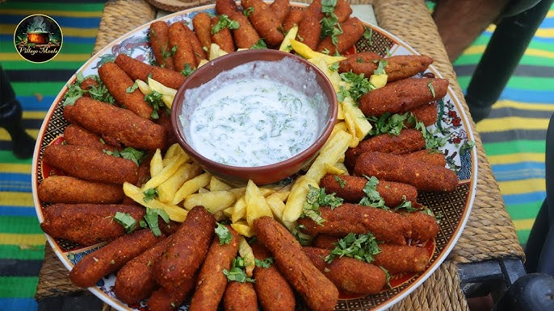

Home
|
Add Recipe
|
Recipe List
Lola Kabab (Afghan Seekh Kabab)

Ingredients
Ingredient
Amount
Unit
Minced Meat (Beef or Lamb)
1
kg
Onion (grated)
1
piece
Garlic
2
cloves
Coriander Powder
1
tsp
Cumin Powder
1
tsp
Black Pepper
1
tsp
Salt
To
taste
Oil
3
tbsp
Skewers
As
needed
Cooking Instructions
Mix minced meat with onion, garlic, and all spices. Knead well.
Shape the mixture onto skewers into kabab shapes.
Brush with oil and grill or pan-fry until cooked and golden.
Serve hot with naan, chutney, and fresh salad.
← Back to Recipe List